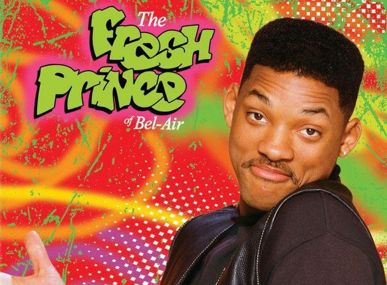
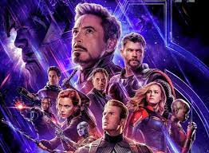
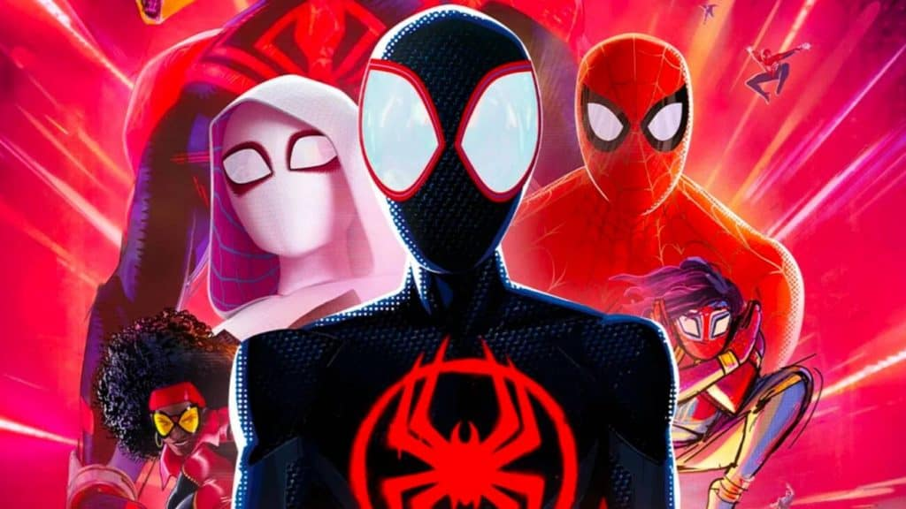
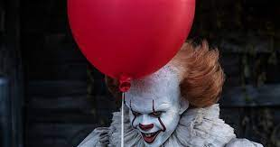
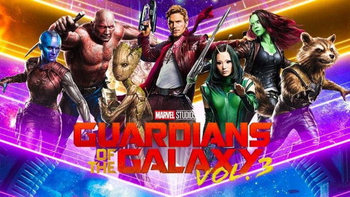

Após arrumar confusão com pessoas perigosas de seu bairro, na Filadélfia, a mãe de Will, temendo pelo futuro de seu filho, resolve mandá-lo para viver com sua irmã Vivian (Janet Hubert-Whitten) e seu cunhado Philip (James Avery), um advogado que se tornou juiz e tem uma vida muita bem sucedida.


Seis jovens são unidos por laços familiares, românticos e, principalmente, de amizade, enquanto tentam vingar em Nova York. Rachel é a garota mimada que deixa o noivo no altar para viver com a amiga dos tempos de escola Monica, sistemática e apaixonada pela culinária.

Em 2030, o arquiteto Ted Mosby (Josh Radnor) conta a história sobre como conheceu a mãe dos seus filhos. Ele volta no tempo para 2005, relembrando suas aventuras amorosas em Nova York e a busca pela mulher dos seus sonhos. Ao longo do anos, Ted aproveita para falar a jornada dos seus amigos: o advogado Marshall Eriksen (Jason Segel), a professora Lily Aldrin (Alyson Hannigan), a jornalista Robin Scherbatsky (Cobie Smulders) e o mulherengo convicto Barney Stinson (Neil Patrick Harris).

Um professor do secundário com cancro do pulmão terminal junta-se a um ex-aluno para fabricar e vender metanfetaminas como forma de garantir o futuro da sua família. Veja tudo o que quiser. "Ruptura Total" venceu um total de 16 Emmys, incluindo quatro para Melhor Ator Dramático, para Bryan Cranston.

Loki, o irmão de Thor, ganha acesso ao poder ilimitado do cubo cósmico ao roubá-lo de dentro das instalações da S.H.I.E.L.D. Nick Fury, o diretor desta agência internacional que mantém a paz, logo reúne os únicos super-heróis que serão capazes de defender a Terra de ameaças sem precedentes. Homem de Ferro, Capitão América, Hulk, Thor, Viúva Negra e Gavião Arqueiro formam o time dos sonhos de Furry...

Após ser atingido por uma teia radioativa, Miles Morales, um jovem negro do Brooklyn, se torna o Homem-Aranha, inspirado no legado do já falecido Peter Parker. Entretanto, ao visitar o túmulo de seu ídolo em uma noite chuvosa, ele é surpreendido com a presença do próprio Peter, vestindo o traje do herói por baixo de um sobretudo. A surpresa fica ainda maior quando Miles descobre que ele veio de uma dimensão paralela, assim como outras versões do Homem-Aranha.

Um grupo de crianças se une para investigar o misterioso desaparecimento de vários jovens em sua cidade. Eles descobrem que o culpado é Pennywise, um palhaço cruel que se alimenta de seus medos e cuja violência teve origem há vários séculos.

Peter Quill deve reunir sua equipe para defender o universo e proteger um dos seus. Se a missão não for totalmente bem-sucedida, isso pode levar ao fim dos Guardiões.